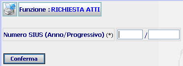
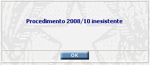

RICHIESTA ATTI: La funzione consente di inserire l'anno/numero del procedimento sius relativamente al quale va richiesto l'atto istruttorio ed accedere alla maschera di richiesta documenti istruttori.
LE MASCHERE VIDEO
La funzione viene realizzata attraverso la maschera seguente:

N.B.: se è presente un procedimento corrente su cui si sta
già lavorando verrà visualizzata a fianco del Numero SIUS anche il pulsante

COME FARE PER ...
| Se presente il pulsante
, l'utente
può compilare, in automatico, i campi relativi al Numero SIUS, cliccando
appunto sul bottone |
| Per
richiedere gli atti istruttori prodotti
dal sistema l'utente deve
compilare i campi Anno/Numero del procedimento Sius presenti nella maschera
e cliccare sul bottone
|
CAMPI
I dati che consentono di richiedere l'atto istruttorio sono i seguenti:
| NOME | DESCRIZIONE |
| Anno | Compilare il campo con l'Anno in formato numerico "aaaa". |
| Numero procedimento SIUS | Compilare il campo con caratteri numerici. |
PULSANTI
Oltre al pulsante
 ,
che
fa parte del gruppo di
pulsanti di "Uso Comune"
è presente il seguente pulsante:
,
che
fa parte del gruppo di
pulsanti di "Uso Comune"
è presente il seguente pulsante:
|
PULSANTE |
DESCRIZIONE |
|
|
Questo pulsante ha lo scopo di compilare, in automatico, i campi relativi al Numero SIUS (anno e progressivo) con il procedimento corrente. |
BOTTONI
Oltre ai comandi funzionali relativi al menù verticale è presente il seguente bottone:
|
COMANDI |
DESCRIZIONE |
|
|
A fronte di tale comando, il sistema dopo aver verificato la validità dei dati specificati, presenta la maschera di richiesta documenti istruttori. |
CONTROLLI
Il sistema controlla l'esistenza del procedimento selezionato e nel caso in cui questo non venisse rinvenuto fornirebbe il seguente messaggio
